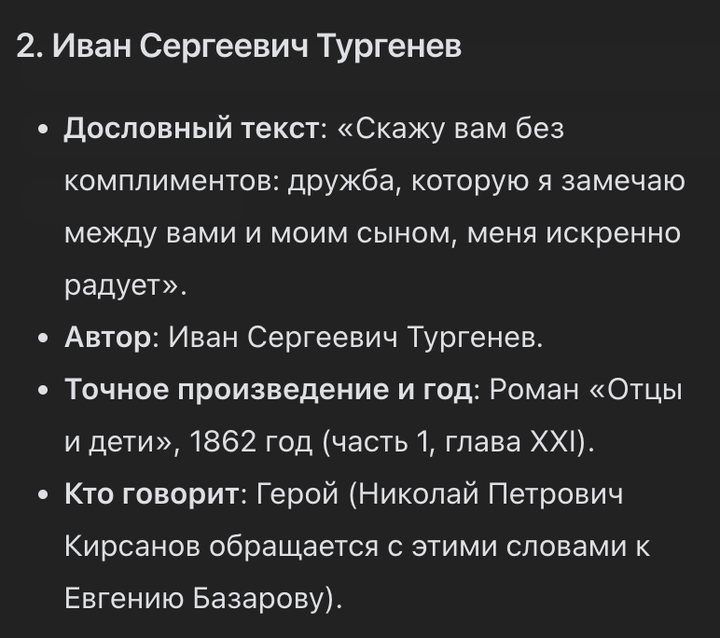

Бесплатные уроки · Qwen
Подберёшь цитату для поздравления и найдёшь её в тексте книги за минуту.
Красивая цитата делает поздравление — и портит его, если подписана чужим именем. В интернете полно фраз, которые классики не говорили. Qwen ищет по сети и подбирает цитаты с источником. Учимся за минуту находить фразу в самом тексте — и не верить подписи «кто сказал».
Подбери 3 цитаты русских писателей о [дружбе] для поздравления. Для каждой: дословный текст, автор, точное произведение и год, и кто это говорит — автор или герой. Если точного источника не нашёл — так и напиши, не придумывай.
Мы проверили по текстам все шесть цитат из двух ответов Qwen. Хорошая новость: все фразы настоящие. Плохая — подписи к ним путаются. На короткую просьбу Qwen дал Пушкина, Толстого и Герцена. У Толстого это слова героя, Нехлюдова, и одно слово изменено. У Герцена вместо произведения — «из афоризмов», а на деле это статья «Дилетантизм в науке».
С запросом из урока Qwen назвал главу, год и того, кто говорит. И ошибся как раз в том, о чём мы спросили:

Мы открыли главу XXI: «Скажу вам без комплиментов…» говорит отец Базарова гостю сына, Аркадию. А «части 1» в «Отцах и детях» нет вовсе — в романе только главы. Вставишь в открытку «как сказал Николай Петрович» — кто-нибудь да заметит.
Так мы и нашли Герцена: поиск по «взаимное эхо» сразу вывел на «Дилетантизм в науке».
Подбери цитату для ближайшего поздравления: дню рождения, юбилею, учителю. Найди её в тексте на Викитеке и только потом вставляй в открытку.
Урок рассчитан на сайт chat.qwen.ai; поиск в режиме «Авто» Qwen включает сам. Названия кнопок могут отличаться в приложении и после обновлений. Подписка на наше обучение не включает платные тарифы нейросетей.
Qwen — запросы урока проверены 3 октября 2026. Все цитаты сверены по текстам на Викитеке: «19 октября» Пушкина, «Отрочество» и «Война и мир» Толстого, «Отцы и дети» Тургенева (глава XXI), «Дилетантизм в науке» Герцена.
Следующий урок — «Раскраска для ребёнка за 2 минуты». Нарисуешь раскраску с любимым героем ребёнка и проверишь лист до печати.
Читать следующий урок